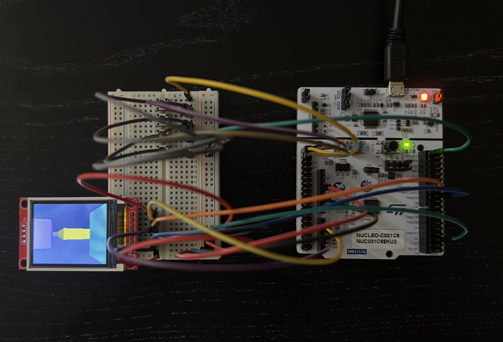
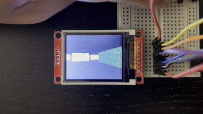
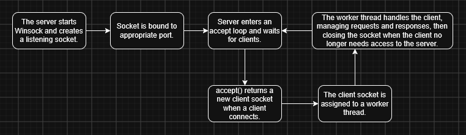
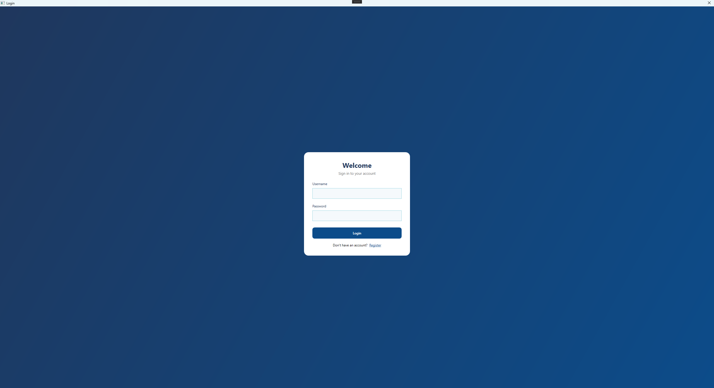
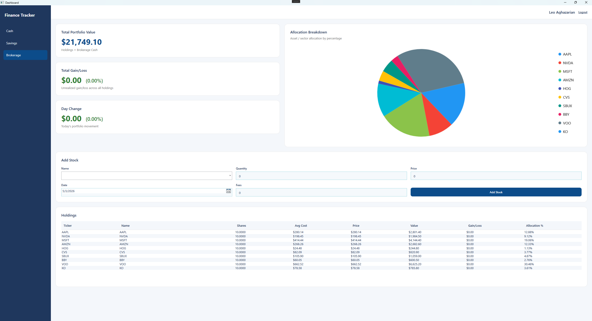
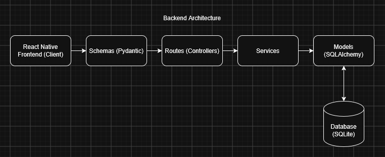
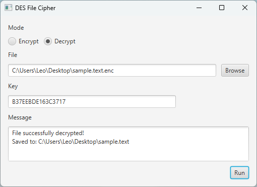
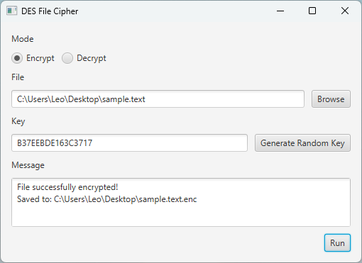

Hi, I'm a software engineer who enjoys working across both hardware and software. Whether I'm writing microcontroller firmware, building network servers, or putting together desktop applications, my focus is simply on writing clean, practical code. Outside of software development, I'm also interested in computer graphics, game design, history, and movies.
I wanted to write a program which would run on limited hardware, which led me to build a real-time 2.5D raycasting engine for an STM32 Nucleo microcontroller. Because the chip lacks a hardware floating-point unit, I tackled the performance challenge by pairing the Digital Differential Analysis (DDA) algorithm with custom Q16.16 fixed-point arithmetic and precomputed trigonometric lookup tables, streaming smooth graphics to an ST7735S display via SPI.
I structured the codebase cleanly across modular files (dda.c, player.c, map.c, draw.c) to handle boundary-safe collision detection, camera rotation, and directional shading. Along the way, I also built a cross-platform desktop companion version using SDL3 when I wanted to experiment with an even crisper image and higher frame rate.


To dive deeper into network programming and concurrency, I built a multithreaded HTTP server in C++ using Winsock. Rather than spawning a new thread for every incoming connection, I created a custom worker-thread pool to handle multiple clients efficiently and gracefully. From the ground up, I implemented TCP socket setup, client connection management, and precise HTTP request parsing, routing, and static file serving.
To make sure it was truly robust, I even wrote a PowerShell stress test to bombard the server with multiple waves of concurrent requests, validating its stability under heavy pressure.

As a semester-long project for a senior software engineering course, I co-developed with another student a WPF desktop application designed to give users a clean, dashboard-style interface for managing cash, savings, and brokerage accounts. Taking ownership of the backend, I integrated Firebase for secure authentication and cloud data storage, while hooking up the Alpha Vantage API for real-time stock searches and pricing, and LiveCharts2 for dynamic graph and chart displays.
I structured the entire project around an MVVM and layered architecture—separating Views, ViewModels, Services, Repositories, and models—to smoothly power features like transaction tracking, budget monitoring, savings account management, and live API updates.


Collaborating with a team of four peers to build a cross-platform task and schedule manager featuring an AI assistant, I took ownership of the backend using SQLAlchemy, SQLite, and Pydantic. I implemented secure user authentication and authorization using various Python backend security packages, leveraging FastAPI's dependency injection for clean and maintainable session management.
To bring the application together, I and another team member built a collection of RESTful API endpoints supporting activity management, unique folder organization, advanced search and filtering, and automated notification triggers.

Wanting to learn more about user interface design and digital cryptography, I built a desktop file encryption application centered around a complete, from-scratch implementation of the Data Encryption Standard (DES). Rather than relying on existing crypto libraries, I wrote out the low-level cryptographic logic—including 16-round key scheduling, permutations, S-box substitutions, and a full Feistel network.
To ensure secure block-based file processing, I layered on Cipher Block Chaining (CBC) mode with random IV generation and PKCS#7 padding. To tie it all together, I wrapped the engine in a user-friendly desktop GUI equipped with file selection, encryption and decryption modes, and strict hex key and file-size validation.

